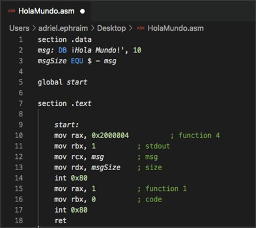
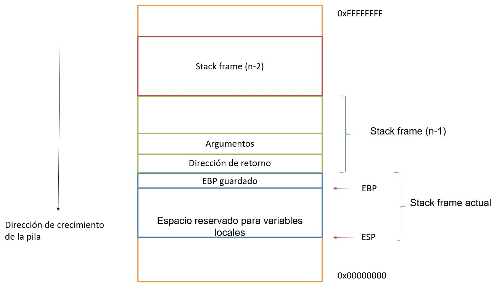

Lenguaje ensamblador x86
Con los registros, los anillos de privilegio y el direccionamiento del módulo 7 ya asentados, este módulo entra en el lenguaje con el que se programan directamente esos registros: el ensamblador. Es el lenguaje en el que, en último término, se traduce cualquier programa —y cualquier malware— antes de ejecutarse, y el que aparece en cualquier desensamblador durante un análisis estático.
1 Qué es el lenguaje ensamblador
El ensamblador es un lenguaje de bajo nivel: cada instrucción se corresponde, casi de manera directa, con una instrucción que el procesador ejecuta físicamente. A diferencia de un lenguaje de alto nivel como C, en ensamblador se trabaja explícitamente con registros, direcciones de memoria y la pila, sin las abstracciones (variables con nombre, estructuras de control, funciones) que ofrece un lenguaje de alto nivel.

La sintaxis básica de una instrucción en ensamblador x86 sigue, en general, el patrón:
INSTRUCCIÓN destino, origen ; ejecuta la operación y guarda el resultado en "destino"
Por ejemplo, mov eax, 1 copia el valor 1 en el registro EAX, y add eax, ebx suma el contenido de EBX a EAX y guarda el resultado en EAX.
2 Modos de direccionamiento
Un modo de direccionamiento define cómo se especifica el operando (el dato) sobre el que actúa una instrucción. Los modos más habituales en x86 son:
- Inmediato: el operando es un valor constante incluido directamente en la instrucción, por ejemplo mov eax, 5.
- Por registro: el operando es el contenido de un registro, por ejemplo mov eax, ebx.
- Directo a memoria: el operando es el contenido de una dirección de memoria fija, por ejemplo mov eax, [0x00404000].
- Indirecto a través de registro: la dirección de memoria a la que se accede está contenida en un registro, por ejemplo mov eax, [ebx].
- Base + desplazamiento: combina un registro base con un desplazamiento constante, muy habitual para acceder a campos de una estructura o a variables locales en la pila, por ejemplo mov eax, [ebp-4].
3 Categorías de instrucciones
El repertorio de instrucciones x86 se agrupa, funcionalmente, en las siguientes categorías:
| Categoría | Función | Ejemplos |
|---|---|---|
| Transferencia | Mover datos entre registros, memoria y la pila | mov, push, pop, lea |
| Aritméticas | Operaciones matemáticas | add, sub, mul, div, inc, dec |
| Comparación | Comparar valores actualizando el registro de FLAGS | cmp, test |
| Lógicas | Operaciones a nivel de bit | and, or, xor, not |
| Desplazamiento | Desplazar o rotar los bits de un valor | shl, shr, rol, ror |
| Entrada/salida | Comunicación con puertos y con el sistema | in, out, int |
| Control de flujo | Alterar el orden de ejecución | jmp, call, ret, familia jxx |
4 Saltos condicionales: la familia JXX
Las instrucciones de comparación (cmp, test) no alteran el flujo del programa por sí mismas: se limitan a actualizar el registro FLAGS. Es la familia de saltos condicionales, conocida genéricamente como JXX, la que lee esos indicadores y decide si saltar a otra dirección o continuar en secuencia. Son la traducción, a nivel de ensamblador, de cualquier if o bucle de un lenguaje de alto nivel.
| Instrucción | Salta si… |
|---|---|
| je / jz | Igual / resultado cero |
| jne / jnz | Distinto / resultado no cero |
| jg / jl | Mayor que / menor que (con signo) |
| ja / jb | Mayor que / menor que (sin signo) |
| jge / jle | Mayor o igual / menor o igual |
5 De C a ensamblador: un mismo programa, dos niveles
Comparar el mismo fragmento de lógica en C y en ensamblador ayuda a ver cómo un if de alto nivel se traduce en una comparación seguida de un salto condicional:
if (a > b) { resultado = a; } else { resultado = b; }
mov eax, [a]
cmp eax, [b]
jle else_rama
mov [resultado], eax
jmp fin
else_rama:
mov eax, [b]
mov [resultado], eax
fin:
Esta capacidad de reconocer, al leer ensamblador, patrones equivalentes a estructuras de alto nivel (if/else, bucles for o while, llamadas a funciones) es exactamente la habilidad que se ejercita en el análisis estático de malware con un desensamblador.
6 La pila y las convenciones de llamada
La pila (stack) es una estructura de memoria de tipo LIFO (Last In, First Out: el último dato en entrar es el primero en salir) que crece hacia direcciones de memoria más bajas y que se usa, sobre todo, para gestionar las llamadas a funciones: guardar la dirección de retorno, los argumentos y las variables locales de cada función activa.

Cada vez que se llama a una función se crea un nuevo stack frame (marco de pila) sobre el frame de la función que llama, delimitado normalmente por el registro EBP (Base Pointer). Al entrar en la función se guarda el EBP anterior y se actualiza al valor de ESP; al salir, se deshace exactamente ese proceso, liberando el frame y devolviendo el control a la dirección de retorno guardada. Este patrón de entrada y salida es lo que se conoce como prólogo y epílogo de una función.
La forma exacta en que se pasan los argumentos y se limpia la pila la define la convención de llamada:
- cdecl: los argumentos se apilan de derecha a izquierda y es la propia función que llama (el "caller") quien limpia la pila al terminar. Es la convención por defecto en C.
- stdcall: los argumentos también se apilan de derecha a izquierda, pero es la función llamada ("callee") la que limpia la pila antes de retornar. Es la convención estándar de la API de Windows (WinAPI).
- fastcall: los primeros argumentos se pasan directamente por registros (en lugar de por la pila) para ganar velocidad, y solo el resto, si los hay, se apila.